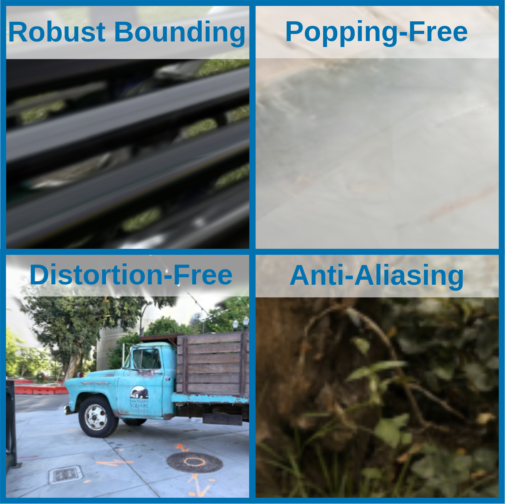
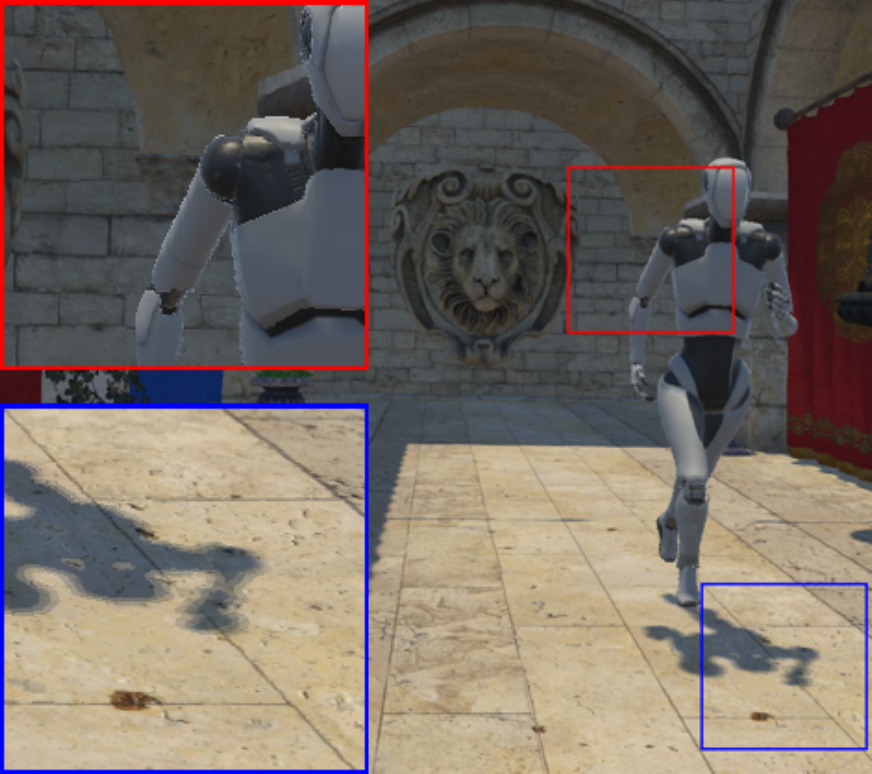
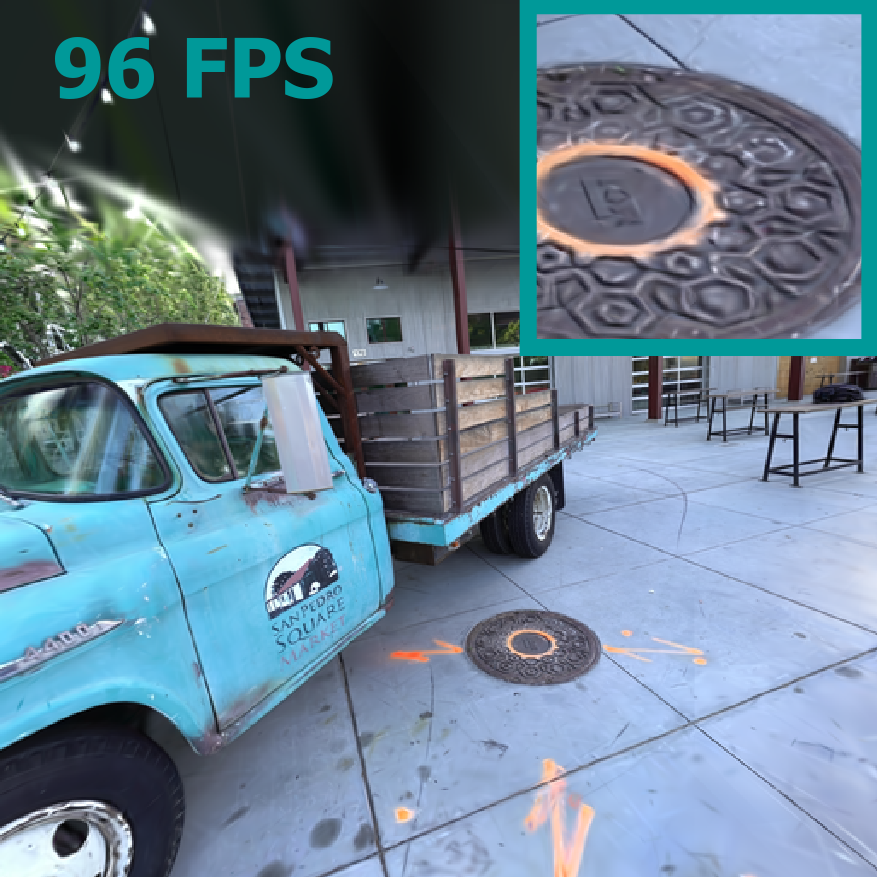
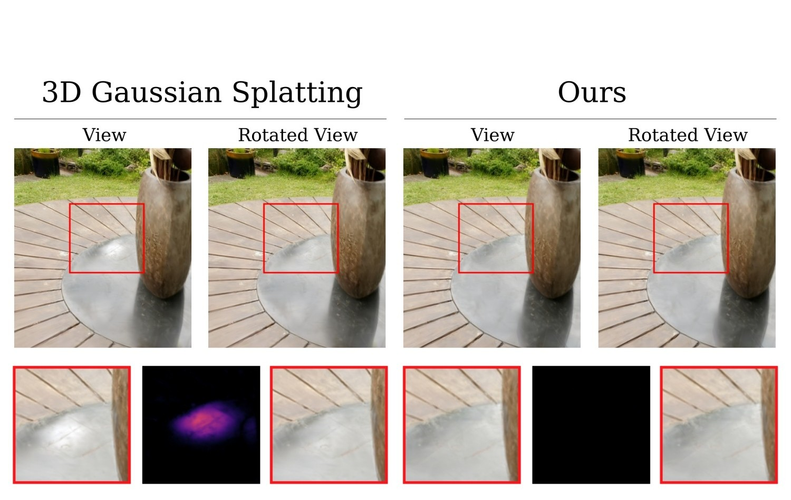
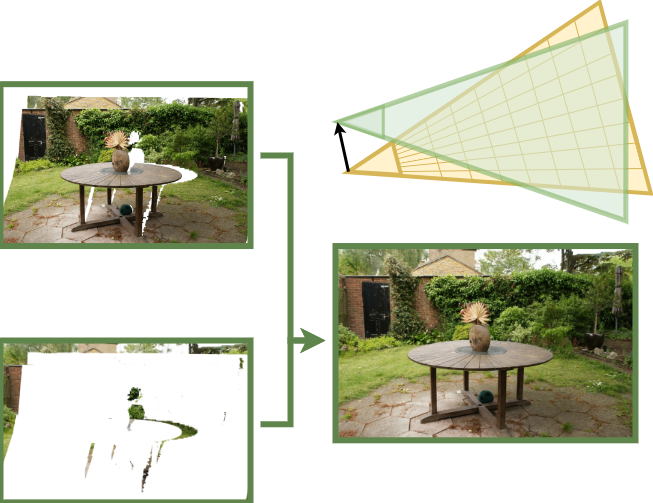

{kind=link}
Research Papers

Lukas Radl, Felix Windisch, Thomas Deixelberger, Jozef Hladky, Michael Steiner, Dieter Schmalstieg, Markus Steinberger.
SIGGRAPH Asia, 2025.
We analyze and improve Gaussian Opacity Fields, and incorporate per-pixel sorting, exact depth and novel losses to enable rapid extraction of unbounded meshes from 3D Gaussians.

Michael Steiner*, Thomas Köhler*, Lukas Radl, Felix Windisch, Dieter Schmalstieg, Markus Steinberger.
ICCV (Poster Highlight), 2025.
We introduce an adaptive 3D smoothing filter to mitigate aliasing and present a stable view-space bounding method that eliminates popping artifacts when Gaussians extend beyond the view frustum. Our method achieves state-of-the-art quality on in-distribution evaluation sets and significantly outperforms other approaches for out-of-distribution views.

Michael Steiner*, Thomas Köhler*, Lukas Radl, Brian Budge, Markus Steinberger.
High-Performance Graphics (CGF), 2025.
Our method enables spatio-temporal interpolation via bidirectional reprojection to efficiently generate intermediate frames in a split rendering setting, while limiting the communication cost and relying purely on image-based rendering. Furthermore, our method is robust to modest connectivity issues and handles effects such as dynamic smooth shadows.

Xuechang Tu, Lukas Radl, Michael Steiner, Markus Steinberger. Bernhard Kerbl, Fernando de la Torre.
I3D (PACMCGIT), 2025.
VRSplat combines and extend several recent advancements in 3DGS to address challenges of VR holistically. We show how the ideas of Mini-Splatting, StopThePop, and Optimal Projection can complement each other, by modifying the individual techniques and core 3DGS rasterizer.

Michael Steiner*, Lukas Radl*, Mathias Parger, Alexander Weinrauch, Bernhard Kerbl, Markus Steinberger.
SIGGRAPH (TOG), 2024.
3D Gaussian Splatting performs an approximate global sort of primitives, leading to undesireable popping artifacts. By hierarchically sorting primitives in a tile-based rasterizer, we allow for view-consistent rendering while maintaining real-time performance.

Michael Steiner, Thomas Köhler, Lukas Radl, Markus Steinberger.
High-Performance Graphics (PACMCGIT), 2024.
We accelerate NeRF rendering of high-quality video sequences by caching and temporally reusing NeRF latent codes. Our frustum-aligned volumetric cache datastructure together with our novel view-dependent cone encoding allow for smaller latent codes and fast re-evaluation, leading to render speed-ups of up to 2x for our Instant-NGP based model.

Lukas Radl, Michael Steiner, Andreas Kurz, Markus Steinberger.
CVPR, 2024.
Locally Stylized Neural Radiance Fields via point-based 3D style transfer with geometry-aware losses - reduced background artefacts, more detail retention and view-consistency.

Lukas Radl, Andreas Kurz, Michael Steiner, Markus Steinberger.
CVPR Workshop on Neural Rendering Intelligence, 2024.
Using density estimates derived from activations for inverse transform sampling in NeRFs allows for faster inference and comparable visual quality.
Thank you to Jon Barron for providing the public source code of his website.